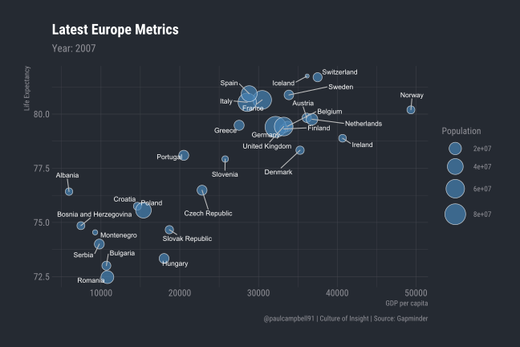

Europe Report
Paul Campbell
22 October 2018
This is an example of a parameterised HTML report produced with rmarkdown. Given a dataset, an rmarkdown script, a list of parameters to pass to it (in this case Continents) and a rendering function, we can batch produce a report for each Continent supplied to the report script.
The data, script, render function and generated reports are viewable in this github repository.
For information about automated data reporting wit R, check out this blogpost on the Culture of Insight website.
Linked Interactive Graphics
Chart showing latest percentage changes in metrics from year 2002 to 2007.
Use the search bar to highlight a particular country across all 3 charts or click directly on one of the bars. Double clicking will deselect the highlighted country.
Latest Period Figures (2007) & % Changes (2002-2007)
Searchable + sortable data table.
Static Charts with ggplot2
Bubble chart visualising all 3 metrics for latest year of data with automated placement of annotations.

Animated Charts
Add animation to the charts in your reports for greater impact.

Learning
Making the switch to doing your data work with R can be daunting, but with the combination of RStudio as your ‘integrated development environment’, the tidyverse packages for data analysis, and rmarkdown for producing reports in just about any format you’d like (HTML, PDF, Word, PowerPoint, Dashboard, even entire websites like this one!), there has never been a better time to make the leap and start your journey to better data reporting workflows. There’s also a really great and welcoming community of R users online who are always happy to help new users feel at home.
If you’d like some help getting started, we’re currently running a 1-day ‘Master Data with Code’ workshop where you’ll learn how to import, manipulate, join and transform data using the tidyverse in the RStudio IDE.
We also offer bespoke in-house training for teams where we focus on your own specific data tasks and how you can use R for greater accuracy and efficiency in data processing, and engagement in your communicated insights.
For more information get in touch via our Contact Page.
Thanks for reading!